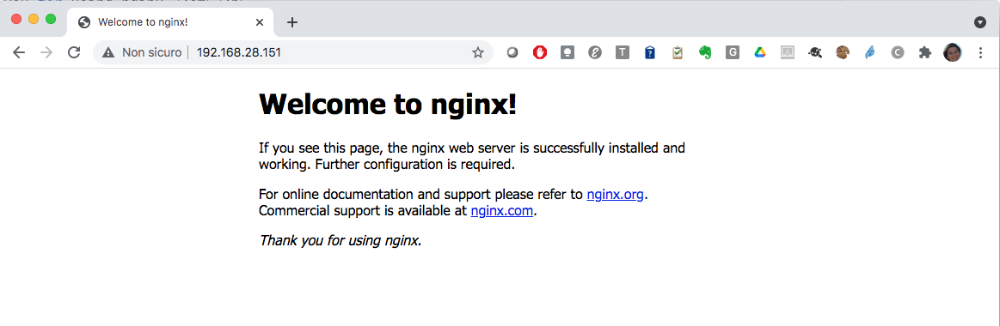

Bridge mode and port mapping
Let's start from the nginx docker container started in the previous section.
The inspect command provided details about the networking configuration of the container:
...
"Networks": {
"bridge": {
"IPAMConfig": null,
"Links": null,
"Aliases": null,
"NetworkID": "0aa786b7de5fbfcd3e18db78511ed544d450bb0ad198cab0244bc8b83d30b514",
"EndpointID": "c3b64e072f7851e3bf55ba3685fa1fbdec6b9c59d18ae27e5e90a1be5728f54c",
"Gateway": "172.17.0.1",
"IPAddress": "172.17.0.2",
"IPPrefixLen": 16,
"IPv6Gateway": "",
"GlobalIPv6Address": "",
"GlobalIPv6PrefixLen": 0,
"MacAddress": "02:42:ac:11:00:02",
"DriverOpts": null
}
}
...
To list out the networks in your system, execute the following command:
docker network ls
NETWORK ID NAME DRIVER SCOPE
0aa786b7de5f bridge bridge local
19747c3d0c9a host host local
36dc4ef5b900 none null local
As you can see, our container is attached to the default brige network 0aa786b7de5f (long ID: 0aa786b7de5fbfcd3e18db78511ed544d450bb0ad198cab0244bc8b83d30b514).
We get more details about this network with the inspect command:
docker network inspect 0aa786b7de5f
[
{
"Name": "bridge",
"Id": "0aa786b7de5fbfcd3e18db78511ed544d450bb0ad198cab0244bc8b83d30b514",
"Created": "2021-05-27T13:27:32.164161898Z",
"Scope": "local",
"Driver": "bridge",
"EnableIPv6": false,
"IPAM": {
"Driver": "default",
"Options": null,
"Config": [
{
"Subnet": "172.17.0.0/16",
"Gateway": "172.17.0.1"
}
]
},
"Internal": false,
"Attachable": false,
"Ingress": false,
"ConfigFrom": {
"Network": ""
},
"ConfigOnly": false,
"Containers": {
"2f03f1f2cd100ec584349124a93f180fa743d1c3ab7bcc31c9d8156225d6f06a": {
"Name": "nginx",
"EndpointID": "c3b64e072f7851e3bf55ba3685fa1fbdec6b9c59d18ae27e5e90a1be5728f54c",
"MacAddress": "02:42:ac:11:00:02",
"IPv4Address": "172.17.0.2/16",
"IPv6Address": ""
}
},
"Options": {
"com.docker.network.bridge.default_bridge": "true",
"com.docker.network.bridge.enable_icc": "true",
"com.docker.network.bridge.enable_ip_masquerade": "true",
"com.docker.network.bridge.host_binding_ipv4": "0.0.0.0",
"com.docker.network.bridge.name": "docker0",
"com.docker.network.driver.mtu": "1500"
},
"Labels": {}
}
]
We can see that the container has an IP address of 172.17.0.2 and uses the gateway address of the docker0 interface.
Now we know that our nginx service is running on port 80 inside the container.
Indeed we can contact our service on port 80 using the IP 172.17.0.2, try the following command from your docker host:
curl http://172.17.0.2:80
<!DOCTYPE html>
<html>
<head>
<title>Welcome to nginx!</title>
<style>
body {
width: 35em;
margin: 0 auto;
font-family: Tahoma, Verdana, Arial, sans-serif;
}
</style>
</head>
<body>
<h1>Welcome to nginx!</h1>
<p>If you see this page, the nginx web server is successfully installed and
working. Further configuration is required.</p>
<p>For online documentation and support please refer to
<a href="http://nginx.org/">nginx.org</a>.<br/>
Commercial support is available at
<a href="http://nginx.com/">nginx.com</a>.</p>
<p><em>Thank you for using nginx.</em></p>
</body>
</html>
All the containers attached to the default bridge network can talk each other.
What if we want to reach the service running in the container using the local network on the host?
Try the following command:
curl http://127.0.0.1:80
curl: (7) Failed to connect to 127.0.0.1 port 80: Connection refused...
We need to publish the service port in the container to a port on our local network. This can be done using the --publish option (or -p) of the docker container run command. The correct syntax is:
--publish <host port>:<container port>
So let's start another container with this option:
docker container run -d --name nginx2 -p 80:80 nginx
Look at the different description of the two containers:
docker ps
CONTAINER ID IMAGE COMMAND CREATED STATUS PORTS NAMES
8d5609a40033 nginx "/docker-entrypoint.…" 35 seconds ago Up 33 seconds 0.0.0.0:80->80/tcp, :::80->80/tcp nginx2
2f03f1f2cd10 nginx "/docker-entrypoint.…" 2 hours ago Up 2 hours 80/tcp nginx
We can see here that the container port 80 is mapped on the host port 80 (0.0.0.0:80->80/tcp, :::80->80/tcp).
As before, the command docker container inspect provides further information:
...
"NetworkSettings": {
"Bridge": "",
"SandboxID": "c66c74726ef8185887d6057d9efd1a4870f0b4b77543213d3bb4fe80db2bd48b",
"HairpinMode": false,
"LinkLocalIPv6Address": "",
"LinkLocalIPv6PrefixLen": 0,
"Ports": {
"80/tcp": [
{
"HostIp": "0.0.0.0",
"HostPort": "80"
},
{
"HostIp": "::",
"HostPort": "80"
}
]
},
...
Now we can verify that our service is reachable on port 80 of our local network running the following command from the host:
curl http://127.0.0.1:80
Indeed you can reach your service also from outside using the IP of your host. If the inbound connectivity on port 80 is ensured by the firewall rules, you can connect to the nginx service using the browser on your local workstation.

Using a user-defined bridge network¶
In the previous example we have seen that any container you run will be automatically attached to the default bridge network.
Tip
A user-defined bridge network has some important extra features w.r.t. the default one as described in the official docs on this topic:
- Automatic DNS resolution between containers
- Better isolation
- Containers can be attached and detached from user-defined networks on the fly
- Each user-defined network creates a configurable bridge
Now use the docker network create command to create a user-defined bridge network:
docker network create mynet
64319187a52ba82fcbff86b348b42c3ac847e5cfb6a2365b123b7de597ff6eee
List the docker networks: you will see also mynet in the list:
docker network ls
NETWORK ID NAME DRIVER SCOPE
0aa786b7de5f bridge bridge local
19747c3d0c9a host host local
64319187a52b mynet bridge local
36dc4ef5b900 none null local
We can use the network connect command to attach a container to a network.
Tip
The syntax for this command is:
docker network connect <network identifier> <container identifier>
Let's connect our first nginx container:
docker network connect mynet nginx
Note that the container was already attached to the default bridge network. Let's inspect the container to get the new networking configuration:
docker inspect nginx
...
"Networks": {
"bridge": {
"IPAMConfig": null,
"Links": null,
"Aliases": null,
"NetworkID": "0aa786b7de5fbfcd3e18db78511ed544d450bb0ad198cab0244bc8b83d30b514",
"EndpointID": "c3b64e072f7851e3bf55ba3685fa1fbdec6b9c59d18ae27e5e90a1be5728f54c",
"Gateway": "172.17.0.1",
"IPAddress": "172.17.0.2",
"IPPrefixLen": 16,
"IPv6Gateway": "",
"GlobalIPv6Address": "",
"GlobalIPv6PrefixLen": 0,
"MacAddress": "02:42:ac:11:00:02",
"DriverOpts": null
},
"mynet": {
"IPAMConfig": {},
"Links": null,
"Aliases": [
"2f03f1f2cd10"
],
"NetworkID": "64319187a52ba82fcbff86b348b42c3ac847e5cfb6a2365b123b7de597ff6eee",
"EndpointID": "a232b9e5a82960e12762b949bc83b3e3bd5357580f937b69cae7097384e9eb69",
"Gateway": "172.18.0.1",
"IPAddress": "172.18.0.2",
"IPPrefixLen": 16,
"IPv6Gateway": "",
"GlobalIPv6Address": "",
"GlobalIPv6PrefixLen": 0,
"MacAddress": "02:42:ac:12:00:02",
"DriverOpts": {}
}
}
...
mynet network).
Note that we can also specify the network when we create the container using the --network option. Let's run the following command:
docker run -it --net mynet ubuntu bash
In this way you have created a container that is connected to mynet network.
All containers attached to a user-defined network can communicate using their names (automatic DNS resolution)..so you can contact the container nginx directly (you don't need to know its IP).
Run the command curl http://nginx inside the ubuntu container to verify that the automatic DNS resolution is working:
root@2f03f1f2cd10:/# curl http://nginx
<!DOCTYPE html>
<html>
<head>
<title>Welcome to nginx!</title>
<style>
body {
width: 35em;
margin: 0 auto;
font-family: Tahoma, Verdana, Arial, sans-serif;
}
</style>
</head>
<body>
<h1>Welcome to nginx!</h1>
<p>If you see this page, the nginx web server is successfully installed and
working. Further configuration is required.</p>
<p>For online documentation and support please refer to
<a href="http://nginx.org/">nginx.org</a>.<br/>
Commercial support is available at
<a href="http://nginx.com/">nginx.com</a>.</p>
<p><em>Thank you for using nginx.</em></p>
</body>
</html>
Tip
In order for the automatic DNS resolution to work you must assign custom names to the containers. Using the randomly generated name will not work.